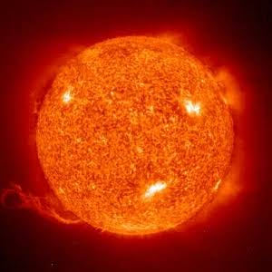

ดวงอาทิตย์
ข้อมูลสำคัญของดวงอาทิตย์
ดวงอาทิตย์เป็นดาวฤกษ์ที่มีขนาดใหญ่ที่สุดในระบบสุริยะ และเป็นแหล่งพลังงานที่ให้แสงและความร้อนแก่ทุกดาวเคราะห์
พลังงานจากดวงอาทิตย์เกิดจากปฏิกิริยานิวเคลียร์ที่เกิดขึ้นภายในใจกลางดาว ทำให้มีความร้อนสูงมากและปล่อยรังสีออกมาเป็นระยะทางไกล
การมีดวงอาทิตย์ช่วยควบคุมสภาพอากาศของโลกและเป็นแหล่งกำเนิดชีวิตที่สำคัญสำหรับสิ่งมีชีวิตบนดาวเคราะห์ของเรา
